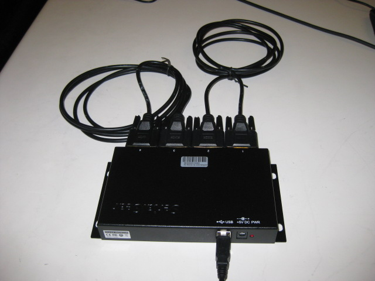
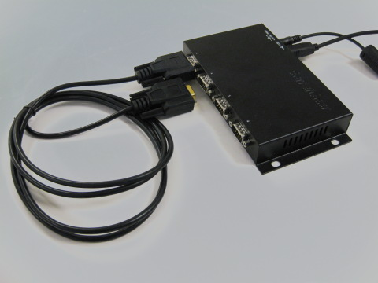

This test will check the connections of the USB to serial converter used in the PR2 battery bay.
Connect the USB and power cables to the converter. The cable should be on your desk
This test uses two serial male-to-male cables. Plug the first cable in to ports 1 and 2 as shown. Plug the second cable in to ports 3 and 4.
Press Continue after you have hooked up the cables.